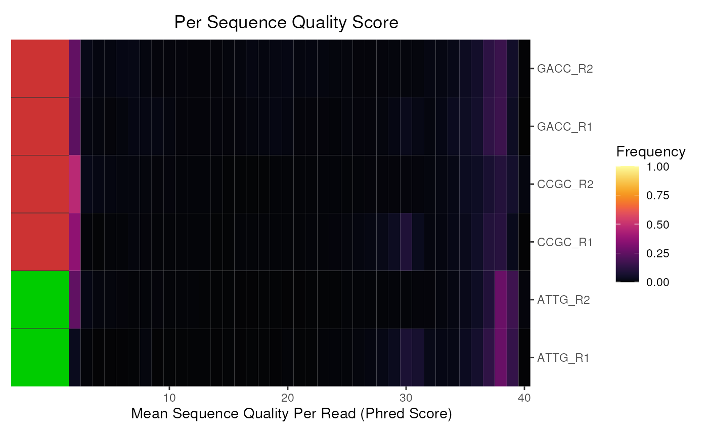
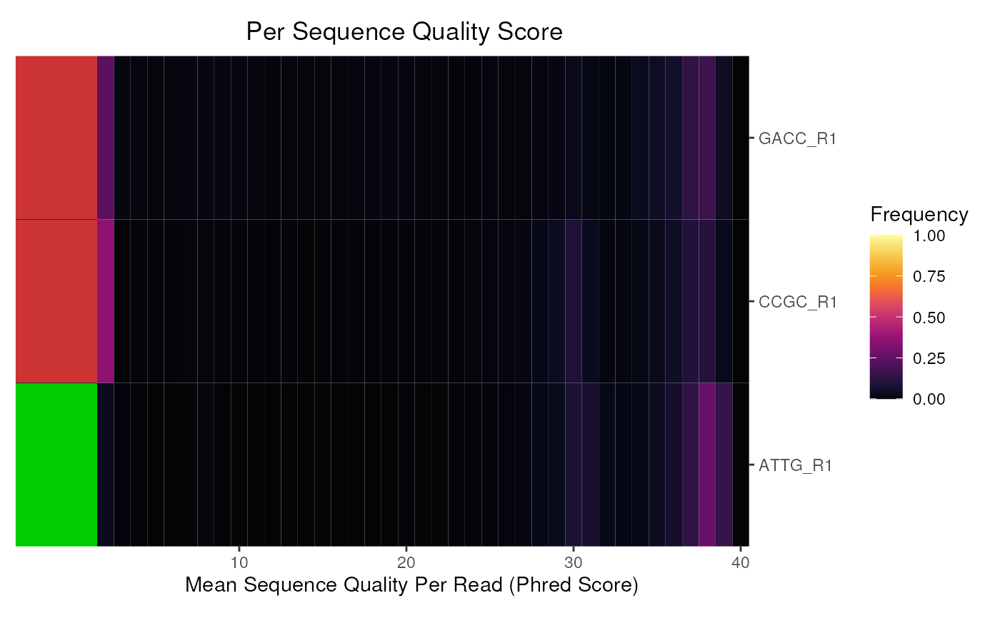

Plot the Per Sequence Quality Scores for a set of FASTQC reports
plotSeqQuals(
x,
usePlotly = FALSE,
labels,
pattern = ".(fast|fq|bam).*",
pwfCols,
...
)
# S4 method for ANY
plotSeqQuals(
x,
usePlotly = FALSE,
labels,
pattern = ".(fast|fq|bam).*",
pwfCols,
...
)
# S4 method for character
plotSeqQuals(
x,
usePlotly = FALSE,
labels,
pattern = ".(fast|fq|bam).*",
pwfCols,
...
)
# S4 method for FastqcData
plotSeqQuals(
x,
usePlotly = FALSE,
labels,
pattern = ".(fast|fq|bam).*",
pwfCols,
showPwf = TRUE,
counts = FALSE,
alpha = 0.1,
warn = 30,
fail = 20,
colour = "red",
plotlyLegend = FALSE,
...
)
# S4 method for FastqcDataList
plotSeqQuals(
x,
usePlotly = FALSE,
labels,
pattern = ".(fast|fq|bam).*",
pwfCols,
counts = FALSE,
alpha = 0.1,
warn = 30,
fail = 20,
showPwf = TRUE,
plotType = c("heatmap", "line"),
dendrogram = FALSE,
cluster = FALSE,
scaleFill = NULL,
heatCols = hcl.colors(100, "inferno"),
heat_w = 8,
scaleColour = NULL,
plotlyLegend = FALSE,
...
)Can be a FastqcData, FastqcDataList or path
logical Default FALSE will render using
ggplot. If TRUE plot will be rendered with plotly
An optional named vector of labels for the file names. All file names must be present in the names of the vector.
Regex to remove from the end of any filenames
Object of class PwfCols() containing the colours
for PASS/WARN/FAIL
Used to pass various potting parameters to theme. Can also be used to set size and colour for box outlines.
logical(1) Show PASS/WARN/FAIL status
logical. Plot the counts from each file if
counts = TRUE, otherwise the frequencies will be plotted
set alpha for line graph bounds
The default values for warn and fail are 5 and 10 respectively (i.e. percentages)
Colour for single line plots
logical(1) Show legend for interactive line plots
character. Can only take the values
plotType = "heatmap" or plotType = "line"
logical redundant if cluster is FALSE
if both cluster and dendrogram are specified as TRUE
then the dendrogram will be displayed.
logical default FALSE. If set to TRUE,
fastqc data will be clustered using hierarchical clustering
ggplot2 scales
Colour palette for the heatmap
Relative width of any heatmap plot components
A standard ggplot2 object, or an interactive plotly object
Plots the distribution of average sequence quality scores across the
set of files. Values can be plotted either as counts (counts = TRUE)
or as frequencies (counts = FALSE).
Any faceting or scale adjustment can be performed after generation of the initial plot, using the standard methods of ggplot2 as desired.
# Get the files included with the package
packageDir <- system.file("extdata", package = "ngsReports")
fl <- list.files(packageDir, pattern = "fastqc.zip", full.names = TRUE)
# Load the FASTQC data as a FastqcDataList object
fdl <- FastqcDataList(fl)
# The default plot
plotSeqQuals(fdl)

# Also subset the reads to just the R1 files
r1 <- grepl("R1", fqName(fdl))
plotSeqQuals(fdl[r1])
